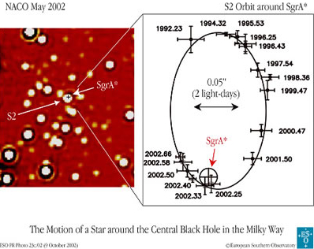

A black hole is a region of space, or rather the mysterious object at the centre of a region of space, within which the force of gravity is so strong that nothing, not even light, can escape.

Interactive: Explore gravitational lensing around a Schwarzschild black hole. Open fullscreen.
The existence of black holes was first suggested as far back as the late 1700s. However, it was Karl Schwarzschild (1873-1916) and the little-known Johannes Droste, who independently developed the modern idea for a black hole. Using Einstein’s theory of general relativity, they discovered that matter compressed to a point (possibly no bigger than the Planck length) would be enclosed by a spherical region of space from which nothing could escape. The limit of this region is called the `event horizon’, a name which signifies that it is impossible to observe any event taking place inside of it (since information is unable to get out).
For a non-rotating black hole, the radius of the event horizon is known as the Schwarzschild radius -with no recognition of Droste – and marks the point at which the escape velocity from the black hole equals the speed of light. In theory, any mass can be compressed sufficiently to form a black hole. The only requirement is that its physical size is less than the Schwarzschild radius. For example, our Sun would become a black hole if its mass was contained within a sphere about 2.5 km across. Our Earth would need to be compressed to a size smaller than 1.77 cm across (diameter).
Well inside the event horizon lies the heart of the black hole. It was referred to as a `singularity’ in the classical, pre-(quantum mechanic) days. It was thought the matter making up the black hole would be compressed to an infinitely small size, giving an infinitely dense object. However we don’t really know what form matter takes at these extreme densities and thus how big a black hole may be within its cloak of invisibility, the `event horizon’.
An interesting dilemma for astrophysicists is that the physical conditions near a singularity result in the complete breakdown of the laws of physics. Yet there is nothing in the theory of general relativity that stops isolated, or ‘naked’, singularities from existing. To avoid the situation where we could actually see this breakdown of physics occur, the cosmic censorship conjecture was proposed. This states that every singularity must have an event horizon which hides it from view – exactly what we find for black holes.
Black holes are completely characterised by three parameters: mass, rotation (spin) and charge. There are now thought to be 4 main types of black holes if classified by mass:
- Primordial Black Holes have masses comparable to or less than that of the Earth. These purely hypothetical objects could have been formed through the gravitational collapse of regions of high density at the time of the Big Bang.
- Stellar Mass Black Holes have masses between about 4 and 100 solar masses and result from the core-collapse of a massive star at the end of its life.
- Intermediate Mass Black Holes of 102 and 105 solar masses may also exist. The first good IMBH is the X-ray source HLX-1, seen in projection near the centre of the S0 galaxy ESO 243-49.
- Supermassive Black Holes weigh between 105 and 1010 solar masses and are found at the centres of most large galaxies.
Alternatively, black holes can be classified by their two other properties of rotation and charge:
- Schwarzschild Black Hole, otherwise known as a ‘static black hole’, does not rotate and has no electric charge. It is characterised solely by its mass.
- Kerr Black Hole is a more realistic scenario. This is a rotating black hole with no electrical charge.
- Charged Black Hole can be of two types. A charged, non-rotating black hole is known as a Reissner-Nordstrom black hole, a charged, rotating black hole is called a Kerr-Newman black hole.
Under the classical theory of general relativity, once a black hole is created, it will last forever since nothing can escape it. However, if quantum mechanics is also considered, it turns out that all black holes will eventually evaporate as they slowly leak Hawking radiation. This means that the lifetime of a black hole is dependent on its mass, with smaller black holes evaporating faster than larger ones. For example, a black hole of 1 solar mass takes 1067 years to evaporate (much longer than the current age of the Universe), while a black hole of only 1011 kg will evaporate within 3 billion years.

Credit: ESO
Observational evidence for black holes is, of course, not straightforward to obtain. Since radiation cannot escape the extreme gravitational pull of a black hole, we cannot detect them directly. Instead we infer their existence by observing high-energy phenomena such as X-ray emission and jets, and the motions of nearby objects in orbit around the hidden mass. An added complication is that similar phenomena are observed around less massive neutron stars and pulsars. Therefore, identification as a black hole requires astronomers to make an estimate of the mass of the object and its size. A black hole is confirmed if no other object or group of objects could be so massive and compact.